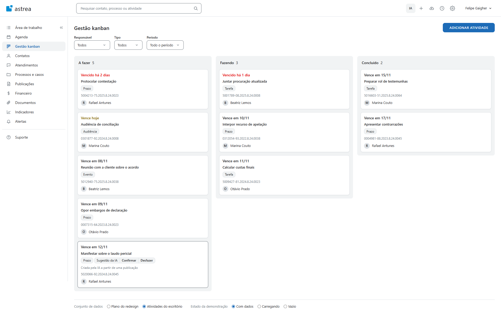

Vence em 12/11
Manifestar sobre o laudo pericial
Prazo
Questão 3, documento-fonte dos slides. Um frame da tela e três páginas, cada um de 1920 por 1080. Mesma direção visual das Questões 1 e 2. Os componentes aparecem ao vivo, com os tokens do protótipo, e não como imagem. A tela vem de prototipo/kanban.html, capturada em prototipo/capturas/.
Questão 3, item 1 de 3. A tela
A tela redesenhada em alta fidelidade no Figma.

Questão 3, item 2 de 3. Componentes, 1 a 3 de 5
De 3 a 5 componentes que nasceram dessa tela e entrariam no design system, com seus estados principais.
Kanban, Área de trabalho e lista lateral da Agenda. Três lugares, um componente. O prazo é o primeiro dado, sempre com texto e cor.
Fundo --color-bg-surface, borda --color-border-default, raio --radius-card, sombra --shadow-card. Vencido --color-text-danger, 4,76:1. Hoje --color-text-warning, 5,12:1. Foco --color-focus, 2px.
Um componente para o tipo da atividade e para a sugestão da IA. A sugestão ganha dois botões. Sem cor própria, sem brilho.
Altura --size-chip 22px, raio --radius-ui 8px. Fundo --color-bg-subtle, borda --color-border-default. Confirmar mantém o card e tira o chip. Desfazer tira o card.
Um seletor para os três filtros e para o painel de criar. Rótulo fixo acima, que não some com valor. Substitui o seletor nativo que aparecia entre componentes customizados.
Rótulo --font-size-label 12px, acima. Borda --color-border-strong, 4,69:1. Erro leva --color-text-danger e texto abaixo do campo. Seta em SVG de linha, currentColor.
Questão 3, item 2 de 3. Componentes, 4 e 5 de 5, e os tokens por trás deles
Dois níveis. Primário em cor de ação e caixa alta, como os botões do Astrea, um por tela. Secundário com borda e caixa normal.
Fundo --color-action, o --primary900 do Astrea, com texto branco a 5,47:1. Hover --color-action-hover, 7,69:1. Raio --radius-ui 8px, o mesmo de card, chip e campo.
A coluna tem contagem no título, recebe foco e é alvo de arrasto. Vazia, ela diz o que falta e convida a agir. Com filtro ativo, o convite muda.
Fundo --color-bg-subtle, o --gray100 do Astrea, raio --radius-card. Alvo de arrasto com borda tracejada em --color-text-muted. Esqueleto em --color-bg-hover, parado com reduced-motion.
| Componente | Área de trabalho | Agenda | Criar atividade |
|---|---|---|---|
| Card de atividade | Lista de tarefas | Lista lateral "sem data" | Não |
| Chip de tipo e de IA | Lista de tarefas | Evento no dia | Tipo da atividade |
| Seletor | Widget de processos | Visão e filtros | Prioridade, lista |
| Botão | Adicionar tarefa | Adicionar atividade | Salvar, Cancelar |
| Coluna e estado vazio | Comece adicionando | Agenda vazia | Não |
A regra da Questão 2: dois ou mais squads usam, entra no DS. Os cinco passam. Cada um substitui pelo menos duas versões que hoje divergem.
--primitive-gray-300#dee2e6, o --gray300 do Nectar--color-border-defaultO legado consome este, por variável CSS--component-card-borderO front novo consome o componenteOs primitivos espelham as variáveis que o CSS do Astrea logado já declara. O DS não inventa cor: ele dá nome e papel ao que existe. A única troca é a cor de ação. O #228BE6 do produto reprova no AA com texto branco. O #1D6BB7, o --primary900 da mesma família, passa a 5,47:1.
Questão 3, item 3 de 3. Uma decisão difícil
Um trade-off que você fez nesta tela e por quê.
O mesmo card, com o mesmo dado. À esquerda, a data é um metadado cinza no fim. À direita, o prazo diz o que aconteceu, em texto e cor, antes de qualquer leitura.
Manter a moldura criticada na Questão 1. Isso era convivência pura, e a convivência já está garantida pela regra da moldura na Questão 2. Não precisava virar a decisão difícil da tela.
O prazo fatal é o dado dominante do card, acima do título da atividade.